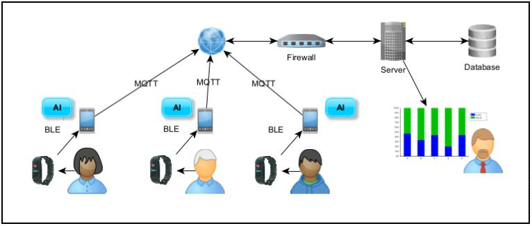
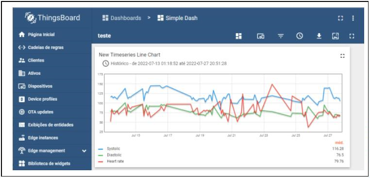
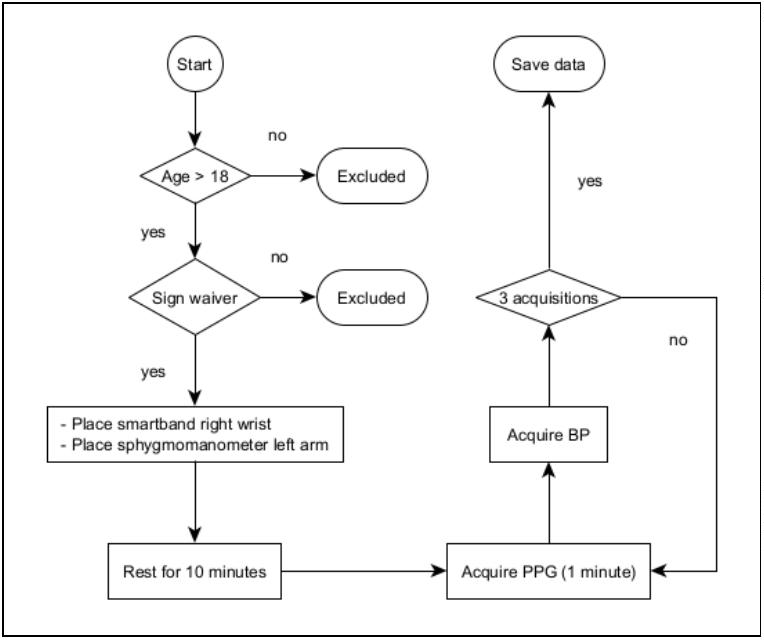

Remote monitoring · InCor
RPMS
Remote Patient Monitoring System
Heart Institute (InCor), Hospital das Clínicas, University of São Paulo Medical School
Objective
RPMS uses watches and a mobile app to track physiological measurements outside the hospital. The phone processes the signals and sends results to a dashboard that clinicians can consult.
My work
I worked with prototype watches, helped define the recording protocols and organized the data. With the team, I developed the photoplethysmography (PPG) preprocessing pipeline and the algorithms used in the project.
How it works

The watch sends PPG to the Android app over Bluetooth Low Energy. The phone processes the signal, estimates blood pressure and heart rate, and sends results over MQTT to a ThingsBoard server. The dashboard displays each patient’s measurements over time.
Results and evaluation
In the architecture published in 2022, the app kept a history of measurements on the phone and sent systolic pressure, diastolic pressure and heart rate estimates to the server.



Collection protocol and signal processing
Under the 2022 protocol, volunteers rested for 10 minutes, then completed three one-minute PPG recordings with cuff blood pressure measurements in between. Signal processing used a 0.5–10 Hz filter, resampling from 200 to 125 Hz and 8-second windows. Test participants were kept separate from those used for training.

Algorithms and research
The 2022 system estimates blood pressure and heart rate. Related studies examined PPG signal quality, diabetes classification and sleep staging. The papers below describe that work.
Related papers
- Moreno R, Dias F, Arruda M et al. IoT Medical Device Architecture to Estimate Non-invasive Arterial Blood Pressure. Symposium on Internet of Things (SIoT), 2022.
- Dias FM et al. Quality Assessment of Photoplethysmography Signals For Cardiovascular Biomarkers Monitoring Using Wearable Devices. arXiv · Preprint, 2023.
- Dias FM et al. Exploring the limitations of blood pressure estimation using the photoplethysmography signal. Physiological Measurement, 2025.
- da Silva Costa TB, Dias FM et al. Blood Pressure Estimation From Photoplethysmography by Considering Intra- and Inter-Subject Variabilities: Guidelines for a Fair Assessment. IEEE Access, 2023.
- Oliveira FAC, Dias FM et al. Machine Learning-Based Diabetes Detection Using Photoplethysmography Signal Features. SBCAS, 2024.
- Quino JAP, Cardenas DAC, Toledo MAF, Dias FM et al. Enhancing Photoplethysmography-Based Sleep Staging Models Through Temporal Context Optimization. Studies in Health Technology and Informatics, 2025.